Tutorial stopping and touch controls
Focused checks: 165/223/223; controls 407, App 141, parser 1120. Report
Before: circle displaced from the stopped car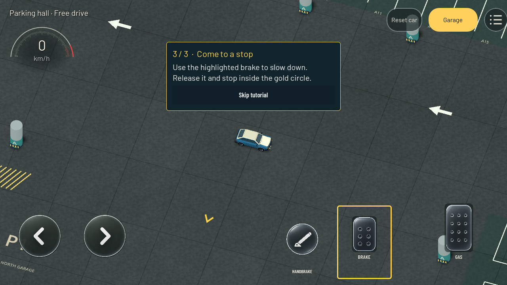
After: circle matches the actual stopping target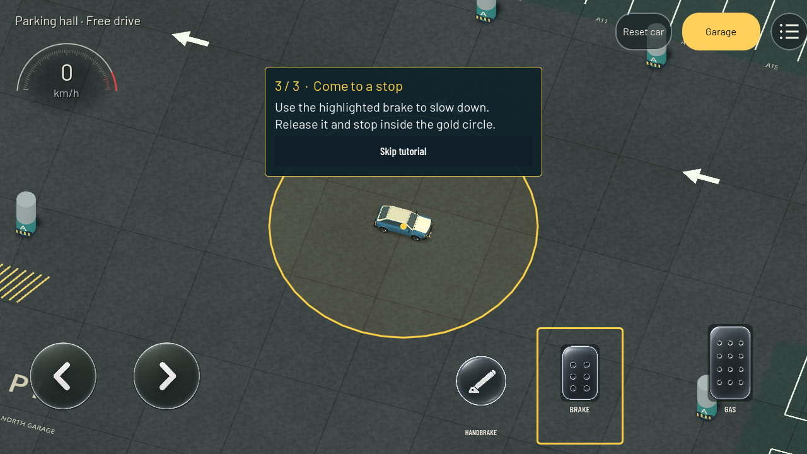
Mobile renderer: aligned target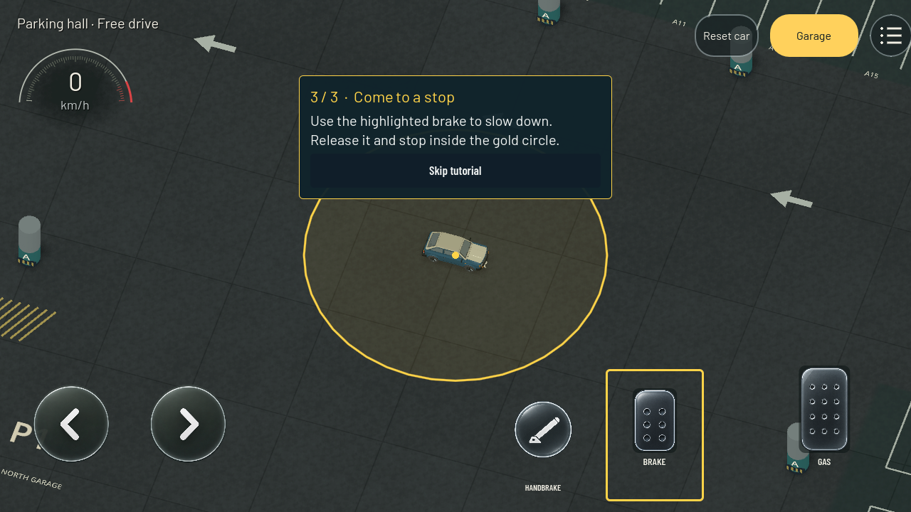
highlight-buttons-0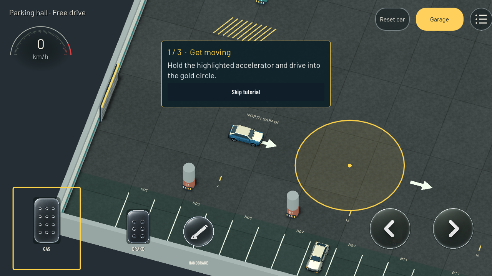
highlight-buttons-1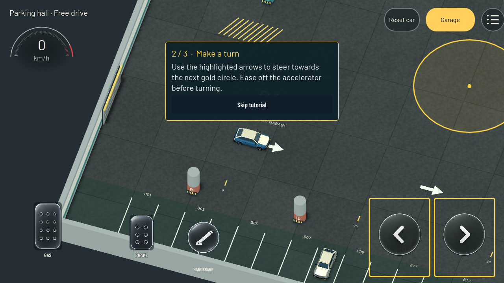
highlight-buttons-2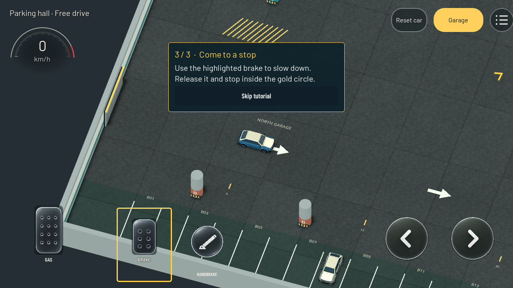
highlight-horizontal-1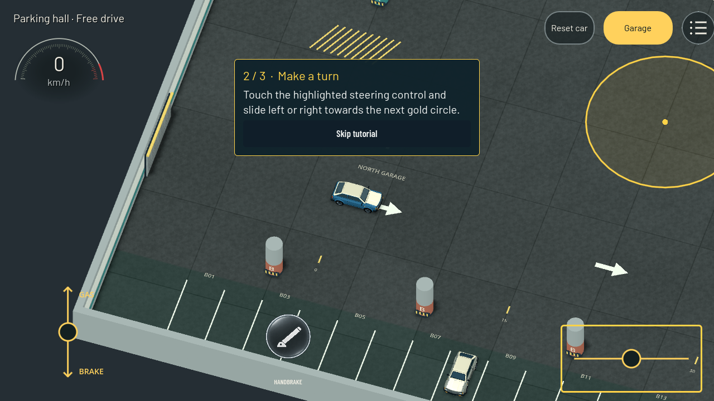
highlight-joystick-1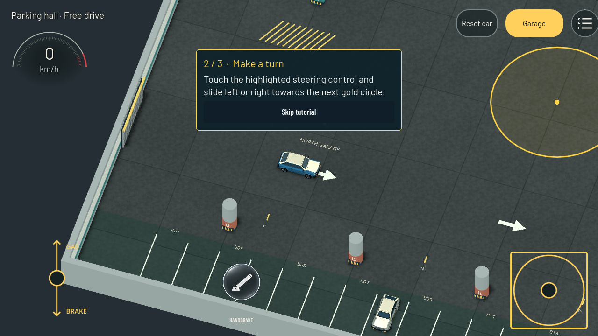
highlight-joystick-2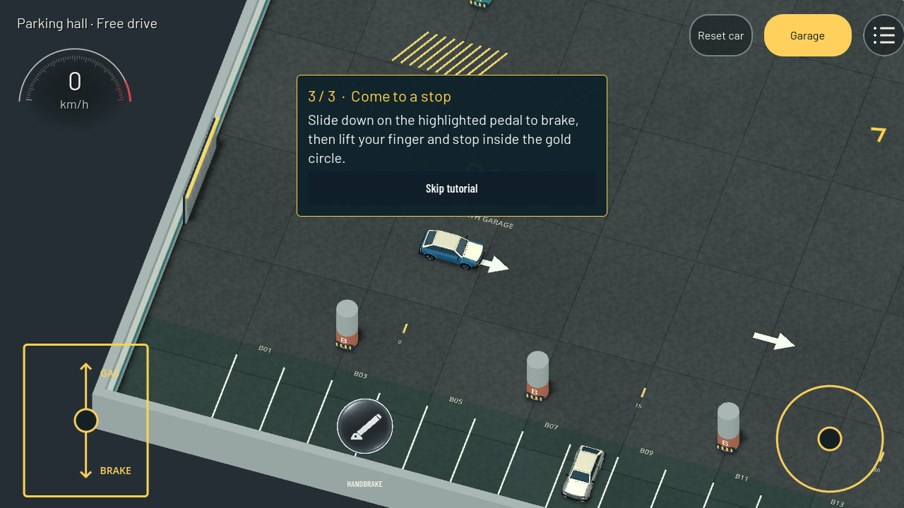
stopped-without-brake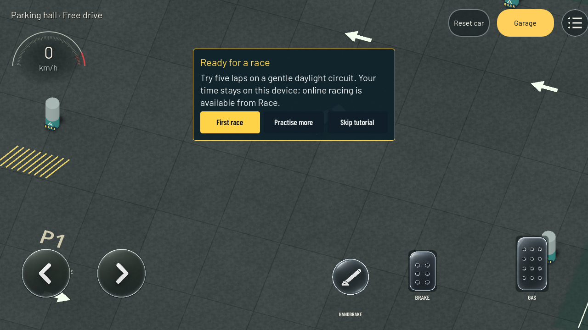
hall-ready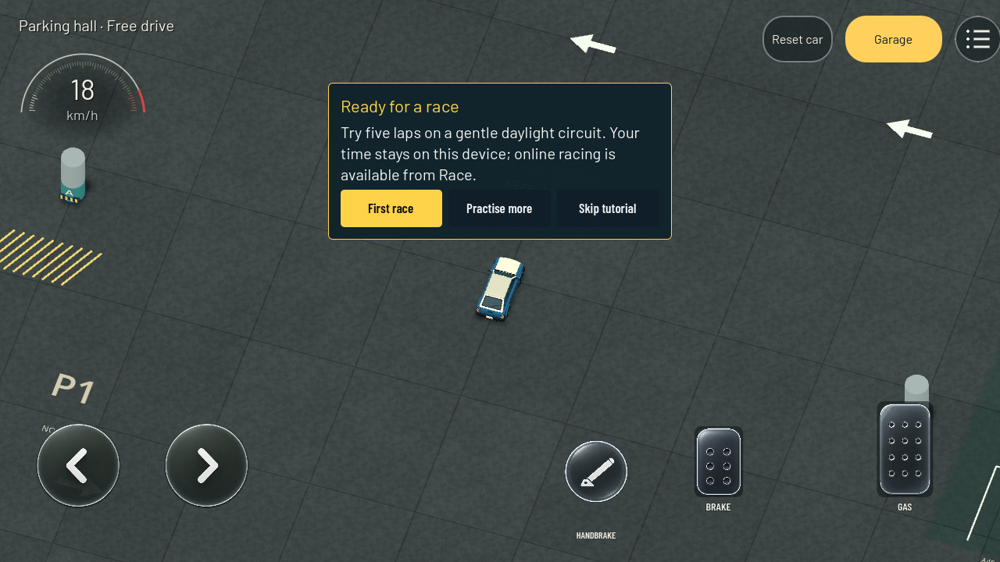